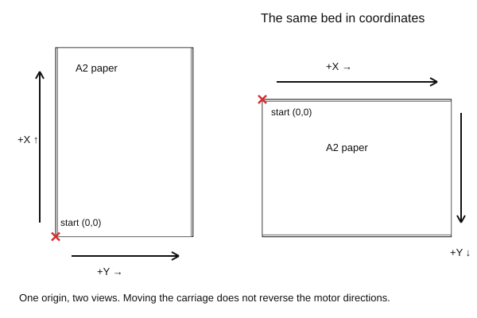
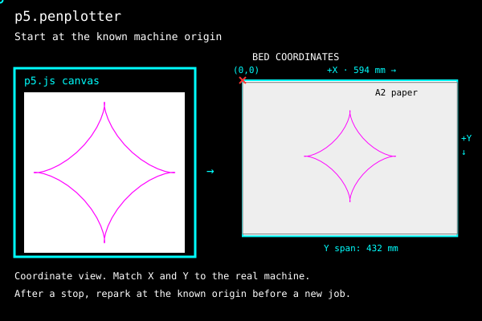

Setup
Load the library in the p5.js Web Editor or a local project. Start with the two files below.
1. In the p5.js editor
Use these two files in the p5.js Web Editor or a folder served through localhost.
The imports pin both libraries to tested source commits. Paper placement, bed previews and sequences were added after the v0.2.1 tag. Keep these imports in index.html and the drawing in sketch.js, with no imports there.
index.html
<!DOCTYPE html>
<html lang="en">
<head>
<meta charset="utf-8">
<title>penplotter start</title>
<script src="https://cdn.jsdelivr.net/npm/p5@2.2.2/lib/p5.js"></script>
<script type="module">
import { PlotterEngine } from "https://cdn.jsdelivr.net/gh/seb-prjcts-be/vanilla.penplotter@4880b41b911ede36b391e2924a4949b27bdb2378/vanilla.penplotter.js";
import * as Ebb from "https://cdn.jsdelivr.net/gh/seb-prjcts-be/vanilla.penplotter@4880b41b911ede36b391e2924a4949b27bdb2378/src/driver/ebb.js";
import { installP5Penplotter } from "https://cdn.jsdelivr.net/gh/seb-prjcts-be/p5.penplotter@b495d269a0f38d8e5fd83b3368a483d0fe50d006/p5.penplotter.js";
installP5Penplotter(p5, PlotterEngine, { driver: Ebb });
</script>
<script src="sketch.js"></script>
</head>
<body>
</body>
</html>sketch.js
let plot;
function setup() {
createCanvas(400, 250);
plot = createPlot({ paper: "A4", margin: 12, width: 120 });
noLoop();
}
function draw() {
background("#ffffff");
stroke("#111111");
noFill();
let points = [];
points.push([60, 200]);
points.push([200, 40]);
points.push([340, 200]);
plot.clear();
plot.polygon(points);
plot.circle(200, 150, 80);
plot.go(); // ready: click the drawing to plot, click again to stop
}Load p5.js before the module, keep sketch.js as a normal script and call createPlot() inside setup(). The adapter is installed before p5 calls it. The load-order reference explains why.
In the p5.js Web Editor
Replace the editor's index.html with the one above and keep sketch.js as a normal file. Drawing, the preview and plot.go() all work there; the port list opens on your click like anywhere else. Plotted from the editor on 2026-10-01, in Chrome, with the eight-line sketch from the start page.
If it breaks
createPlot is not defined:sketch.jshastype="module", orcreatePlot()is called outsidesetup().p5 is not definedin the module: the p5 script tag comes after the module, or failed to load.- An older version keeps showing up after an update: reload with Ctrl+F5 to drop the browser's cached module.
2. Paper placement
The starter makes a 120 × 75 mm drawing, centred on A4 paper. Use the Guide to preview the sheet, change its format or move the drawing.
3. Direct plotting
The physical starting corner
In my setup, viewed as in the diagram below, the carriage starts at the bottom-left corner. Positive X runs up the long rail (594 mm); positive Y runs to the right across the bed (432 mm). The paper preview turns those axes into a coordinate view: (0,0) at top left, X to the right and Y down. These are two views of the same bed.

The machine does not detect its position. The driver assumes that the carriage starts at (0,0). Moving it to another corner changes the physical starting point, but does not reverse the motor directions. Positive coordinates can then send the carriage towards the wrong edge. paperX/paperY move paper within the existing coordinates; they do not change the machine origin. The bounds check verifies the plan, not the physical carriage position.
Whichever wiring you pick, direct plotting needs the same three things:
- The driver handed in at install:
installP5Penplotter(p5, PlotterEngine, { driver: Ebb }). Without it,plot.go()throws and everything else still works. - Chrome or Edge, on
localhostorhttps. Web Serial exists nowhere else. A folder under XAMPP'shtdocsopened ashttp://localhost/…qualifies; a file opened asfile://does not. The p5.js Web Editor does; plotted from it on 2026-10-01. - A click on the drawing.
plot.go()is written at the end of the drawing; the browser shows its port list only after a click, so the status line asks you to check the machine and click. That click is the confirmation. A second click stops.

Advanced setups
The editor setup above is enough for a regular p5 sketch. These alternatives are for sketches that use JavaScript modules.
Instance mode, sketch as a module
Put the imports in sketch.js and load it as a module. Create the sketch with new p5(…); p5 calls use the p. prefix.
index.html
<script src="https://cdn.jsdelivr.net/npm/p5@2.2.2/lib/p5.js"></script>
<script type="module" src="sketch.js"></script>sketch.js
import { PlotterEngine } from "https://cdn.jsdelivr.net/gh/seb-prjcts-be/vanilla.penplotter@4880b41b911ede36b391e2924a4949b27bdb2378/vanilla.penplotter.js";
import * as Ebb from "https://cdn.jsdelivr.net/gh/seb-prjcts-be/vanilla.penplotter@4880b41b911ede36b391e2924a4949b27bdb2378/src/driver/ebb.js";
import { installP5Penplotter } from "https://cdn.jsdelivr.net/gh/seb-prjcts-be/p5.penplotter@b495d269a0f38d8e5fd83b3368a483d0fe50d006/p5.penplotter.js";
installP5Penplotter(p5, PlotterEngine, { driver: Ebb });
new p5(function sketch(p) {
let plot;
p.setup = function () {
p.createCanvas(400, 250);
plot = p.createPlot({ paper: "A4", margin: 12, width: 120 });
p.noLoop();
};
p.draw = function () {
p.background("#ffffff");
p.stroke("#111111");
p.noFill();
plot.clear();
plot.rect(10, 10, 380, 230);
plot.circle(200, 125, 120);
plot.go(); // ready: click the drawing to plot, click again to stop
};
});Why choose it
- One file holds everything: what is imported, which version, and the sketch. No hidden wiring in
index.html. - No dependence on load order. The install and the sketch are the same script.
- Several sketches on one page, each with its own
plot. - The same file runs under a bundler or in a test without changes.
Global mode from a module
Keep the imports in the sketch module and assign each p5 callback to window.
index.html
<script src="https://cdn.jsdelivr.net/npm/p5@2.2.2/lib/p5.js"></script>
<script type="module" src="sketch.js"></script>sketch.js
import { PlotterEngine } from "https://cdn.jsdelivr.net/gh/seb-prjcts-be/vanilla.penplotter@4880b41b911ede36b391e2924a4949b27bdb2378/vanilla.penplotter.js";
import * as Ebb from "https://cdn.jsdelivr.net/gh/seb-prjcts-be/vanilla.penplotter@4880b41b911ede36b391e2924a4949b27bdb2378/src/driver/ebb.js";
import { installP5Penplotter } from "https://cdn.jsdelivr.net/gh/seb-prjcts-be/p5.penplotter@b495d269a0f38d8e5fd83b3368a483d0fe50d006/p5.penplotter.js";
installP5Penplotter(p5, PlotterEngine, { driver: Ebb });
let plot;
function setup() {
createCanvas(400, 250);
plot = createPlot({ paper: "A4", margin: 12, width: 120 });
noLoop();
}
function draw() {
background("#ffffff");
stroke("#111111");
noFill();
plot.clear();
plot.rect(10, 10, 380, 230);
plot.circle(200, 125, 120);
plot.go(); // ready: click the drawing to plot, click again to stop
}
window.setup = setup;
window.draw = draw;Why it works
The module runs at step 4 of the load sequence, connects the adapter, and puts setup and draw on window. At step 6 p5 finds them there, exactly as it would find a classic script's functions. Inside the functions, createCanvas and key resolve because p5 in global mode copies its API onto window before calling setup().
When to use it
When you want one file and no p. prefix, and you are fine with the window. lines at the bottom. Every p5 callback you use (mousePressed, windowResized) needs its own line. A callback that is not assigned to window will not be called by p5.
Import maps
An import map assigns a name to each module URL in index.html. The sketch imports by that name.
<script src="https://cdn.jsdelivr.net/npm/p5@2.2.2/lib/p5.js"></script>
<script type="importmap">
{
"imports": {
"vanilla.penplotter": "https://cdn.jsdelivr.net/gh/seb-prjcts-be/vanilla.penplotter@4880b41b911ede36b391e2924a4949b27bdb2378/vanilla.penplotter.js",
"vanilla.penplotter/driver/ebb": "https://cdn.jsdelivr.net/gh/seb-prjcts-be/vanilla.penplotter@4880b41b911ede36b391e2924a4949b27bdb2378/src/driver/ebb.js",
"p5.penplotter": "https://cdn.jsdelivr.net/gh/seb-prjcts-be/p5.penplotter@b495d269a0f38d8e5fd83b3368a483d0fe50d006/p5.penplotter.js"
}
}
</script>
<script type="module" src="sketch.js"></script>import { PlotterEngine } from "vanilla.penplotter";
import * as Ebb from "vanilla.penplotter/driver/ebb";
import { installP5Penplotter } from "p5.penplotter";
installP5Penplotter(p5, PlotterEngine, { driver: Ebb });The import map must appear before the first module script. Bare names like "p5.penplotter" are what a package manager would resolve; the import map does the same job in the browser, without one.
The GitHub Pages URLs serve current main. The adapter refuses a core below its required minimum; it does not verify every change between versions. For a project you want to keep, pin both versions or keep tested local copies of both repositories.
Library development
Local neighbours
While working on the libraries themselves, load them from sibling folders instead of GitHub Pages. This is how the repository's own examples are wired, on localhost and on the published site alike:
import { PlotterEngine } from "../vanilla.penplotter/vanilla.penplotter.js";
import * as Ebb from "../vanilla.penplotter/src/driver/ebb.js";
import { installP5Penplotter } from "../p5.penplotter/p5.penplotter.js";Relative imports resolve against the importing file. vanilla.penplotter.js re-exports from its own src/ folder, so the whole repository has to be present, not the single file.
Reference
Module load order
p5.penplotter and vanilla.penplotter are ES modules: files that use import and export. A module has two properties that decide these setups.
- A module creates no globals. A
function setup()written inside a module is invisible to p5, because p5's global mode looks forwindow.setup. - A module script is deferred. The browser runs it after the whole page has been read, but before the
loadevent fires.
p5 starts a global-mode sketch on load. For the global-mode starter above, the load order is:
1. p5.js loads (classic script, runs at once)
2. classic scripts run in order (your sketch.js defines setup/draw)
3. page fully read
4. module scripts run (the adapter is installed here)
5. DOMContentLoaded
6. load → p5 calls window.setup() (createPlot already exists)Keep the imports in a module and the global sketch in a normal script.